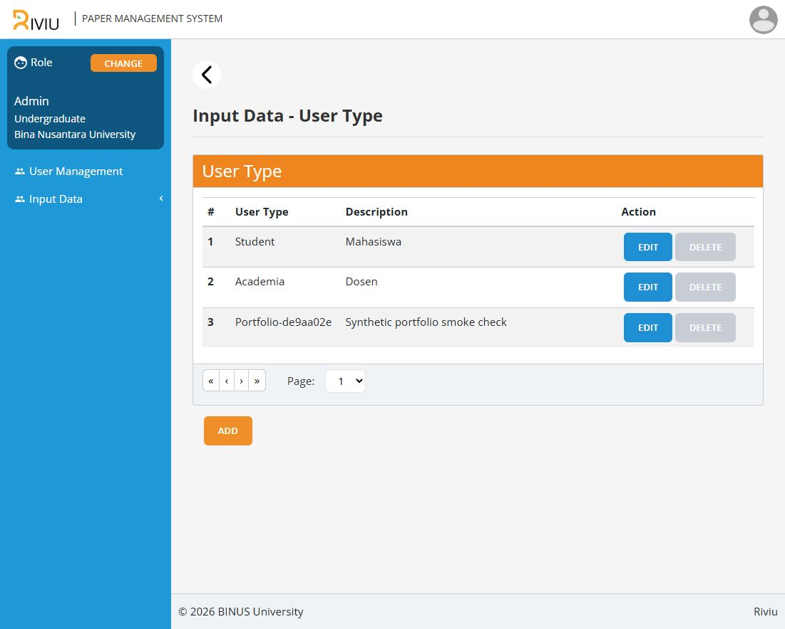

Riviu.
Submission, review, and revision — organized around an academic workflow.
The context
During my BINUS web development internship, I developed .NET backend and React frontend features for an academic-writing and revision-tracking pilot used by a professor. I integrated APIs and handed over the pilot to the next intern team. Quixell was an early trial before the project became Riviu, rather than a separate portfolio achievement.
What I built
The repository family separates account, article, publication, review, and authentication responsibilities. Local configuration connects the React UI to these services without treating earlier Laravel experiments as additional microservices.
Five .NET services and the React frontend build successfully. Demo login, role navigation, and authenticated master-data access work locally. A shared demo JWT is accepted across all four data services using dedicated synthetic databases. The local authentication prototype is single-user and in-memory; institutional SSO and the complete manuscript workflow are not verified, and some service controllers remain placeholders.
A closer look
